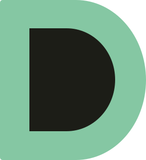

DevAim Labs Design System
Bijgewerkt: 29 september 2026 · Bron: resources/css/v2.css
Overzicht
De site gebruikt één stijl: warm en redactioneel (crème, schreefkoppen, bosgroen, terracotta knoppen), met donkere tech-panelen alleen waar software te zien is (demo's, dashboardkaartjes). Er is een licht en een warm-donker thema; elke kleur hieronder heeft een waarde voor beide.
Drie regels dragen het hele systeem:
- Terracotta is alleen voor acties. Knoppen die iets doen (aanvragen, versturen). Nooit als decoratie.
- Bosgroen is de merkkleur. Links, eyebrows, iconen, accenten in koppen.
- Donker (tech-paneel) betekent software. Dat blijft in beide thema's donker, zodat demo's en dashboards herkenbaar zijn.
| Waar | Bestand |
|---|---|
| Alle kleur-, type- en bewegingstokens | resources/css/v2.css (bovenaan, :root) |
| Lettertypes (zelf gehost) | vite.config.js (bunny(...)) |
| Teksten per taal | config/site-v2.php, config/site-v2-services.php |
| Bedrijfsgegevens | config/organisation.php |
Kleuren
Alle tekstkleuren halen WCAG AA (4,5:1 voor tekst, 3:1 voor grote tekst en rand/iconen). Contrast is gemeten tegen de achtergrond van dat thema.
Basis
| Token | Licht | Donker | Gebruikt voor | Contrast (licht / donker) |
|---|---|---|---|---|
--bg | #FBF7F0 | #15120E | Paginaachtergrond | – |
--surface | #FFFFFF | #1E1A15 | Kaarten, formulieren, header-knoppen | – |
--sand | #F1E7D6 | #241F18 | Afwisselende secties (website-check), tags | – |
--ink | #1F1A14 | #F3EDE3 | Koppen en hoofdtekst | 16,2 / 16,0 |
--muted | #5E5548 | #B5AA99 | Lopende tekst, bijschriften, domeinnamen | 6,9 / 8,2 |
--border | #E7DED0 | #3A3228 | Lijnen, kaartranden (decoratief) | – |
--input-border | #8C7F6C | #8A7E6C | Rand van invoervelden | 3,7 / 4,7 |
Merk en acties
| Token | Licht | Donker | Gebruikt voor | Contrast (licht / donker) |
|---|---|---|---|---|
--primary (bosgroen) | #0F5F46 | #6FC2A0 | Links, eyebrows, iconen, cursief accent in de h1, focusring | 7,2 / 8,8 |
--cta (terracotta) | #C2410C | #C2410C | Achtergrond van actieknoppen, witte tekst erop | wit erop: 5,2 |
--cta-hover | #9A3412 | #CF4A12 | Hover/ingedrukt van actieknoppen | wit erop: 7,3 / 4,5 |
--accent-text | #C2410C | #F08A5D | Terracotta als tekst, alleen grote tekst | 4,9 / 7,6 |
--tint | groen 9% | groen 14% | Zachte vlakken achter iconen en chips | – |
| Fout | #B42318 | #F97066 | Foutmeldingen en foutrand bij velden | ≥ 6,2 |
| Beschikbaar-stip | #16A34A | #16A34A | Alleen de "beschikbaar"-stip | – |
Tech-panelen (altijd donker)
| Token | Waarde | Gebruikt voor | Contrast op #0B0D12 |
|---|---|---|---|
--color-tech-bg | #0B0D12 | Achtergrond demo-panelen, dashboardkaartje | – |
--color-tech-card | #151922 | Kaarten binnen het paneel | – |
--color-tech-line | #2A3140 | Randen binnen het paneel | – |
--color-tech-text | #F4F6FA | Tekst | 18,0 |
--color-tech-muted | #9AA3B2 | Bijschriften | 7,6 |
--color-tech-blue | #4F8CFF | Knoppen en grafiekbalken; knoptekst altijd donker (#0B0D12) | 6,0 |
--color-tech-mint | #5EEAD4 | Positieve waarden, "betaald", focus in panelen | 13,1 |
Wit op tech-blauw haalt maar 3,2:1; gebruik daar altijd donkere tekst. Klantlogo's staan altijd op een licht vlak (--logo-plate: wit, in donker #F3EDE3), omdat ze voor een lichte achtergrond getekend zijn.
Typografie
Drie lettertypes, elk met één taak: Fraunces (schreef) voor koppen, Inter voor alle tekst en interface, JetBrains Mono voor labels, domeinen, prijzen en data. Alle drie staan zelf gehost; de basisgrootte is 17px met regelhoogte 1,6.
| Rol | Lettertype | Grootte | Gewicht | Regelhoogte | Letterspatiëring |
|---|---|---|---|---|---|
| H1 (hero) | Fraunces | 37,6 → 60px (vloeiend) | 400, accentwoord 400 cursief in bosgroen | 1,04 | −2% |
| H2 (sectiekop) | Fraunces | 30,4 → 48px | 400 | 1,10 | −1,5% |
| H3 (kaarttitel, klantnaam) | Fraunces | 22px (klantenlijst 20 → 24px) | 600 | 1,25 | −0,5% |
| Lopende tekst | Inter | 17px | 400 | 1,6 | normaal |
| Lead / intro onder kop | Inter | 18px, in --muted | 400 | 1,6 | normaal |
| Knop | Inter | 16px (klein: 15px) | 600 | 1,2 | normaal |
| Veldlabel | Inter | 15px | 600 | 1,4 | normaal |
| Chip / tag | Inter | 14px | 500 | 1,4 | normaal |
| Eyebrow (bv. DIENSTEN) | Inter, hoofdletters | 13px, bosgroen | 600 | 1,2 | +8% |
| Mono-label (domein, VOORBEELDDATA) | JetBrains Mono, hoofdletters | 12–13px, --muted | 400–500 | 1,4 | +4 tot +6% |
| Cijfers in tech-panelen | JetBrains Mono, tabulaire cijfers | 26px | 500 | 1,1 | normaal |
Regels:
- Koppen zijn licht (400), niet vet. Het karakter komt van Fraunces zelf; alleen kleine koppen (H3) krijgen 600.
- Nadruk in de H1 is cursief + bosgroen, nooit vet of terracotta.
- Tekstregels maximaal 60–65 tekens breed (
max-width: 60ch). - Koppen krijgen
text-wrap: balance; op smalle schermen mag afbreken met koppeltekens (lange Nederlandse woorden). - Beschikbare gewichten: Inter 400–700, Fraunces 400/600/700/900 (+ cursief), JetBrains Mono 400–600. Gebruik alleen de gewichten in de tabel.
Spacing en layout
De ruimte is royaal en loopt in stappen van 4px; secties ademen met 72–128px tussenruimte.
| Wat | Waarde |
|---|---|
| Basisstap | 4px (gebruikte stappen: 4, 6, 8, 10, 12, 14, 16, 18, 20, 24, 28, 32, 40, 48, 64) |
Containerbreedte (.wrap) | max 1200px |
| Zijmarge (gutter) | 16 → 40px, schaalt mee met het scherm |
| Ruimte tussen secties | 72 → 128px boven én onder |
| Onder een sectiekop | 40 → 64px |
| Binnen een sectiekop (eyebrow, kop, intro) | 14px |
| Tussen kaarten in een raster | 16–24px |
| Binnenkant kaart | 20–28px |
| Tussen formuliervelden | 18px; label → veld 6px |
| Tekstbreedte | max 60–65 tekens |
| Vaste header | 88px hoog; ankers scrollen tot 88px onder de bovenkant |
| Breakpoint | Wat verandert |
|---|---|
| < 480px | Knoppen in de hero worden volle breedte |
| < 768px | Mobiel menu, sticky contactbalk onderin, klantenlijst zonder tags |
| ≥ 640px | Dienstkaarten in 2 kolommen |
| ≥ 1024px | Hero in 2 kolommen, dienstkaarten in 3 kolommen |
| ≥ 1100px | Volledig menu in de header |
Vormen
Rond maar niet speels: kaarten 12px, knoppen en chips helemaal rond (pil), schaduwen warm en zacht.
| Element | Radius | Rand | Schaduw |
|---|---|---|---|
| Kaart (dienst, prijs, formulier) | 12px | 1px --border | zacht (zie onder) |
| Browservenster / hero-beeld | 16px | 1px --border | zacht |
| Knop, chip, badge, pauzeknop | 999px (pil) | knop-outline: 1,5px --ink | geen |
| Invoerveld | 10px | 1,5px --input-border | focus: 3px ring bosgroen 30% |
| Klantlogo-vlak | 10px | 1px --border | geen |
| Tech-paneel / dashboardkaartje | 14px | 1px #2A3140 | licht: donkere schaduw; donker: blauwe ring 18% |
| Portretplaat "Over mij" | boog (grote bovenradius) | – | – |
Schaduwen
- Standaard, licht:
0 1px 2px rgba(31,26,20,.06), 0 12px 32px rgba(31,26,20,.08) - Opgetild (hover), licht:
0 2px 4px rgba(31,26,20,.06), 0 20px 44px rgba(31,26,20,.14) - Standaard, donker:
0 12px 32px rgba(0,0,0,.35); opgetild:0 20px 44px rgba(0,0,0,.5)
De schaduwkleur is warm bruin (31,26,20), niet grijs; in donker dragen randen meer dan schaduwen.
Focus is overal een 3px ring in --primary met 3px afstand.
Beweging
Rustig en kort: niets duurt langer dan 450ms, sluiten gaat sneller dan openen, en alleen transform en opacity bewegen.
| Wat | Duur | Curve |
|---|---|---|
| Sectie verschijnt bij scrollen (fade + 12px omhoog) | 350ms, 70ms tussen elementen | cubic-bezier(.2,.8,.2,1) |
| Hero bij laden | alles binnen 700ms | idem; kop vervaagt nooit (LCP) |
| Dashboardkaartje / melding in hero | 400ms | veer, ~1,5% doorschot |
| Knop indrukken | 120ms, schaal 0,97 | cubic-bezier(.23,1,.32,1) |
| Hover (kaart optillen 2–4px, kleur) | 200ms | ease |
| FAQ / klantrij open → dicht | 250ms → 180ms | ease-out |
| Menu / dropdown open → dicht | 150–300ms → 100–200ms | cubic-bezier(.32,.72,0,1) |
| Thema wisselen | 250ms crossfade | ease |
| Logostrook (lus) | 32s per ronde, pauzeerbaar | lineair |
Met "beweging beperken" aan: geen verschuivingen of lussen, alles staat direct in de eindstand; alleen korte fades blijven. Elke lus heeft een pauzeknop en stopt buiten beeld.
Componenten
Elk component gebruikt alleen de tokens hierboven; minimaal 44×44px aanraakvlak.
| Component | Opbouw | Wanneer |
|---|---|---|
Actieknop (btn-cta) | Terracotta vlak, witte tekst 16px/600, pil, 48px hoog, pijl rechts | De één belangrijkste actie per blok |
Outline-knop (btn-outline) | 1,5px rand in ink, transparant; hover: ink-vlak | Tweede actie naast een actieknop |
| Tekstlink met pijl | Bosgroen, onderstreept, pijl schuift 3px bij hover | "Meer over …", "Bekijk de live site" |
Tech-knop (btn-blue) | Tech-blauw vlak, donkere tekst | Alleen binnen tech-panelen (demo starten) |
| Kaart | --surface, 1px rand, 12px, zachte schaduw; hele kaart klikbaar via één link | Diensten, prijzen, formulieren |
| Chip / tag | Pil, --tint-vlak, 14px/500 | Kenmerken van een klant of dienst |
| Invoerveld | 48px hoog, 10px radius, 1,5px rand, 16px tekst (geen zoom op iOS), label altijd zichtbaar erboven | Alle formulieren |
| Foutmelding | Rood (#B42318 / #F97066) onder het veld, met icoon | Na versturen of verlaten van een veld |
| Tech-paneel | #0B0D12, mono-labels, blauw/mint accenten, label "Voorbeelddata" | Demo's, dashboard- en betaalvoorbeelden |
| Klantenlijst | Rijen met hairline, logo op licht vlak, naam in Fraunces, domein in mono; max 3 zichtbaar | Werk-sectie en dienstpagina's |
| Beschikbaar-badge | Pil op --surface met groene stip die 2× pulseert | Alleen in de hero |
Logo: kleuradvies

Gekozen logo (29 september 2026): een "D" met een mintgroene buitenvorm en een bijna-zwarte binnenvorm.
| Onderdeel | Kleur | Bestand |
|---|---|---|
| Buitenvorm (mint) | #85C7A3 | public/brand/devaim-mark.svg |
| Binnenvorm (inkt) | #1C1D17 | idem |
| Eenkleurig (binnenvorm als uitsparing, volgt de tekstkleur) | currentColor | public/brand/devaim-mark-mono.svg |
| Favicon | mark op transparant; Apple-icoon op crème #FBF7F0 | public/favicon.svg, favicon.ico, apple-touch-icon.png |
| Logo voor structured data | 465×512 PNG | public/brand/devaim-mark-512.png |
| Origineel (bron) | 313×377 PNG | design/logo/devaim-logo-source.png |
In het donkere thema valt de binnenvorm weg tegen de achtergrond, zodat de mark leest als een mintgroene D-omlijning. Mint op crème heeft weinig contrast (1,8:1); het logo leunt in het lichte thema op de donkere binnenvorm. Logo's zijn uitgezonderd van de WCAG-contrasteis, maar gebruik de mark in licht niet kleiner dan 24px hoog.
Het advies hieronder was de afweging vooraf.
Advies: maak het beeldmerk bosgroen en het woordmerk ink, met een lichte variant voor donkere achtergronden. Zo sluit het logo aan op de merkkleur van de site en blijft terracotta gereserveerd voor knoppen.
| Optie | Licht thema | Donker thema | Contrast op #FBF7F0 / #15120E | Oordeel |
|---|---|---|---|---|
| 1. Bosgroen merk + ink woord (aanbevolen) | merk #0F5F46, woord #1F1A14 | merk #6FC2A0, woord #F3EDE3 | 7,2 / 8,8 (merk) | Past bij de huisstijl; wel twee versies nodig |
| 2. Alles terracotta | #C2410C | #C2410C | 4,9 / 3,6 | Enige kleur die zonder wisselen op beide achtergronden werkt; maar het logo gaat dan lijken op een knop |
| 3. Monochroom ink | #1F1A14 | #F3EDE3 | 16,2 / 16,0 | Tijdloos en veilig; minder herkenbaar in de browsertab |
| Vermijden: tech-blauw | #4F8CFF | #4F8CFF | – | Hoort bij de demo-panelen, niet bij het merk |
| Vermijden: licht groen op licht | #6FC2A0 | – | 2,0 | Te weinig contrast |
Eisen voor het nieuwe logo:
- Werkt op 16px (favicon): een eenvoudig beeldmerk, bijvoorbeeld een "D", zonder dunne lijnen.
- Favicon: bosgroen vlak (#0F5F46) met crème letter (#FBF7F0); zichtbaar in lichte én donkere browsertabs.
- Varianten: kleur licht, kleur donker, monochroom zwart, monochroom wit; alles als SVG, met transparante achtergrond. De huidige
DevAim_IMG.pngheeft een wit vlak en valt daardoor weg in donker. - Woordmerk: Fraunces 600 sluit aan op de koppen (zoals nu in de header: "DevAim Labs" met cursief Labs).
- Vrije ruimte rondom minstens de hoogte van de "D"; kleinste breedte woordmerk 96px.
- Deelafbeelding (OG, 1200×630): logo op crème (#FBF7F0) of op donker (#15120E), met één regel tekst in Fraunces.